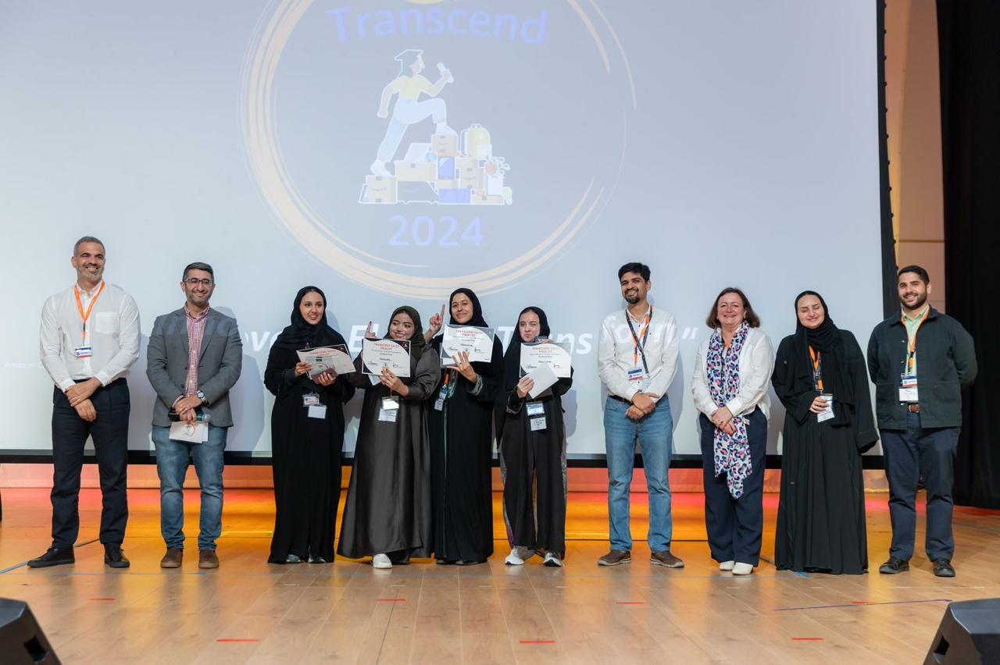
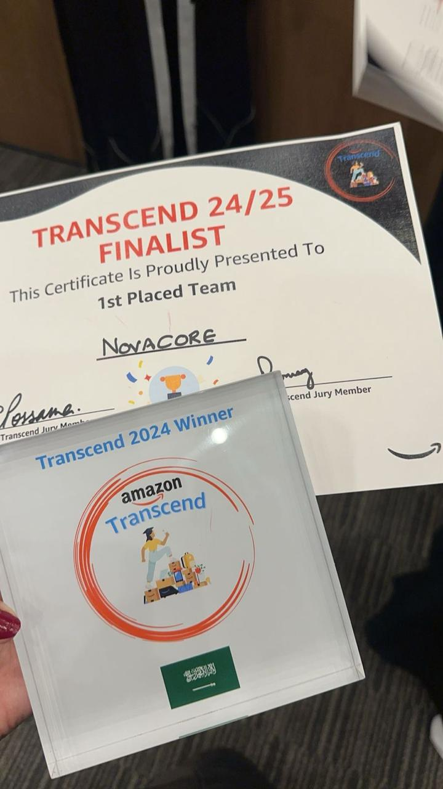
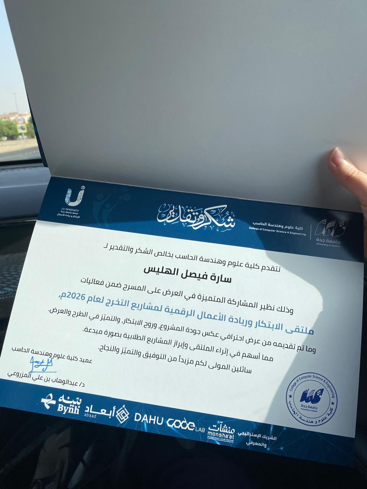
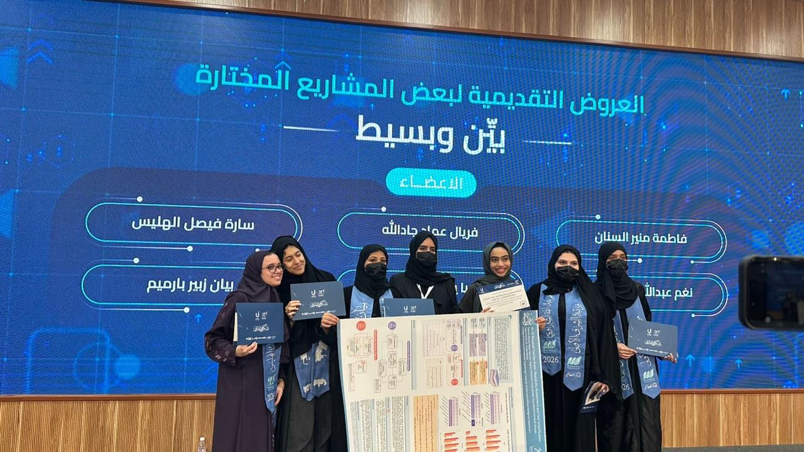
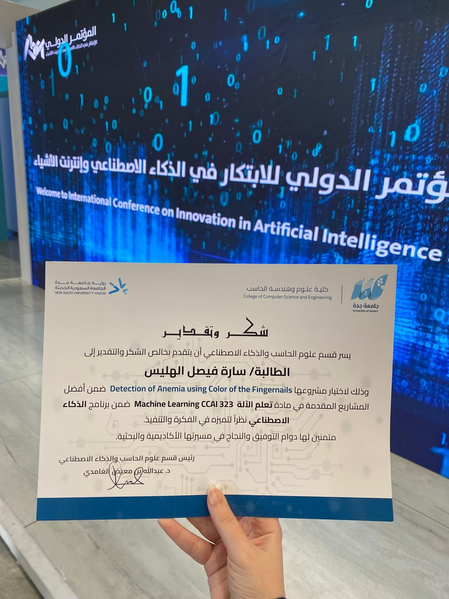
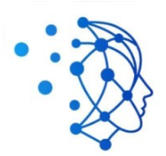
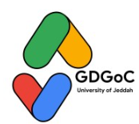
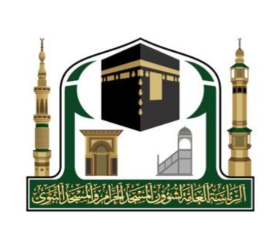
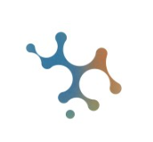

My Work
Bayyin & Baseet
An end-to-end Arabic NLP pipeline: readability classification across six difficulty levels and multi-level text simplification (L1–L3), built on two original datasets (~44,000 and ~36,000 sentences). Published at IEEE ICNLP 2026; won Best Poster, CS & AI Department.
- AraBERTv2
- AraBART
- PyTorch
- Streamlit

Mental Health Self-Help Advisor
A RAG chatbot over 2,100+ curated mental health Q&A pairs, with multi-query expansion, answer reranking, and a crisis-safety filter that routes sensitive queries to helplines.
- ChromaDB
- HuggingFace
- Groq
- Streamlit

Rayah
An NLP-powered platform for historical analysis: LDA topic modeling, named-entity recognition for historical figures and events, and ElevenLabs text-to-speech for Arabic audio narration.
- Scikit-learn
- Transformers
- ElevenLabs
Anemia Detection from Fingernail Images
Non-invasive anemia detection using ResNet-18 (84% accuracy), with autoencoder-based feature extraction and K-means++ clustering.
- TensorFlow/Keras
- scikit-learn
- OpenCV

Publications
Exploring Classification Models and Input Representations for Arabic Readability Assessment
IEEE ICNLP 2026 · Published in IEEE Xplore
View Paper →





Awards
Best Poster Award
Bayyin & Baseet — CS & AI Department, University of Jeddah
1st Place — Amazon Transcend Challenge 2025
Led AI solution design for optimizing Amazon fulfillment center operations.
Best Project — Machine Learning Course (CCAI 323)
Certificate of appreciation from the Department of Computer Science & Artificial Intelligence, University of Jeddah, for "Detection of Anemia Using Color of the Fingernails," selected as the best project submitted in the course.
Experience
AI Specialist
Data Development Center (DDC)
2025.06 — 2025.08
Collaborated on an end-to-end data pipeline spanning collection and preprocessing; built topic modeling and sentiment analysis systems, and implemented a RAG system for information retrieval.
Quality Unit Leader
Robotics and IoT Club
2024.12 — 2025.08
Led error-reporting and coordinated with the Writing Committee to improve content quality, keeping materials aligned with the club's visual identity and standards.
Organization & Support Team Member
Electrical Engineer Preparation Program
2024.06 — 2024.08
Managed Zoom sessions, resolved technical issues live, and supported trainees via email correspondence.
Volunteering

Content Writer
Data Science Club — University of Jeddah
Contributed written content supporting the club's data science activities and initiatives.

Content Writer
Google Developer Student Club — University of Jeddah
Created content to support the club's technical activities and community initiatives.
Mentor
Dulani
Mentored and supported participants during the program.

Volunteer — Visitor Guidance & Awareness
The Grand Mosque — Makkah
Provided spatial guidance and awareness support to female visitors at the Grand Mosque.

Camp Assistant — Security Makers Track
Synapse
Assisted with activities and supported participants in the Security Makers track.
About Me
I graduated with a degree in Artificial Intelligence from the University of Jeddah (4.9/5.0 GPA) with a passion for hands-on, multidisciplinary machine learning. Driven by curiosity and eager to explore emerging AI technologies, I have built systems across Arabic NLP, retrieval-augmented generation (RAG), computer vision, and deep learning techniques.
I work comfortably in both Arabic and English, and most of my projects live at that intersection too.
Resume available upon request via email